Début des consoles de jeu video(1972 à 1989)
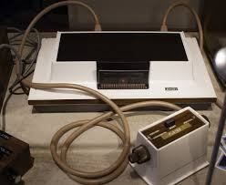
Première console(1972): Magnavox Odyssey
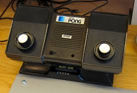
Deuxième console(1975): Atari Home Pong
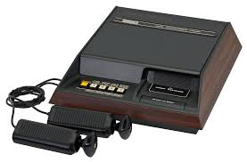
Troisième console(1976): Fairchild Channel F
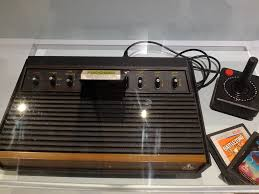
Quatrième console(1977): Atari 2600

Cinquième console(1976): Coleco Telstar
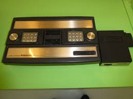
Sixième console(1979): Intellivision
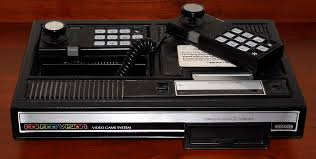
Septième console(1982): ColecoVision
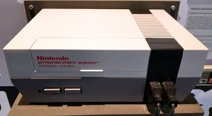
Huitième console(1985): Nintendo Entertainment System
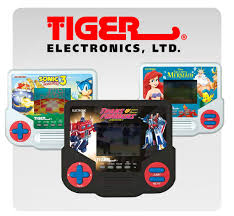
Neuvième console(1985): Tiger Electronics LCD Handheld
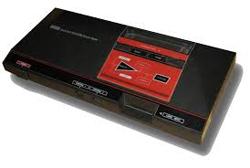
Dixième console(1986): Sega Master System
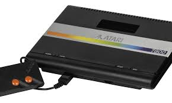
Onzième console(1986): Atari 7800
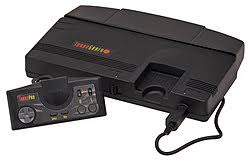
Douzième console(1989): TurboGrafx-16
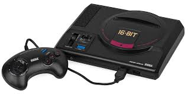
Treizième console(1989): Sega Genesis
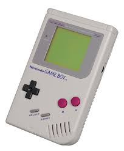
Quatorzième console(1989): Nintendo Gameboy
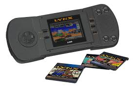
Quinzième console(1989): Atari Lynx